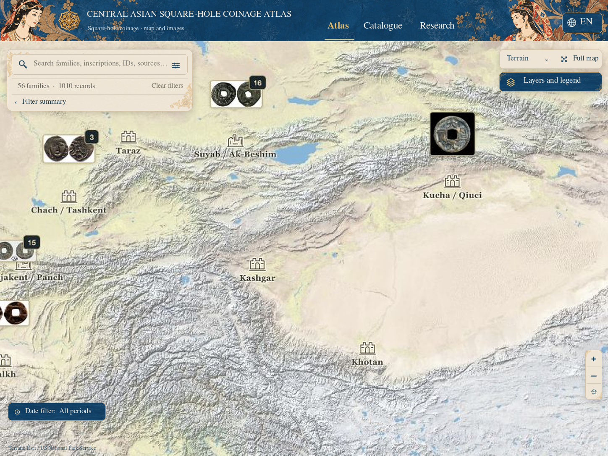
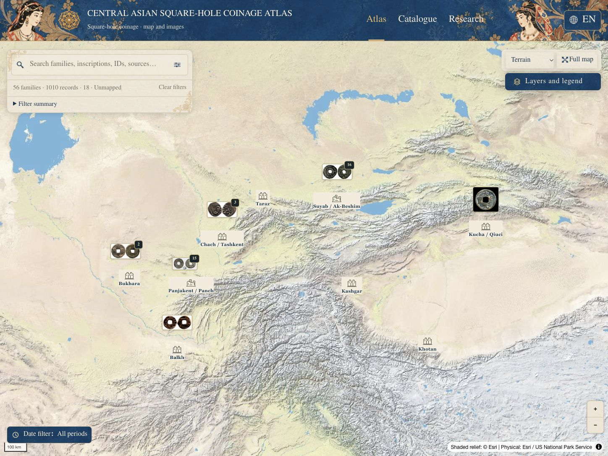
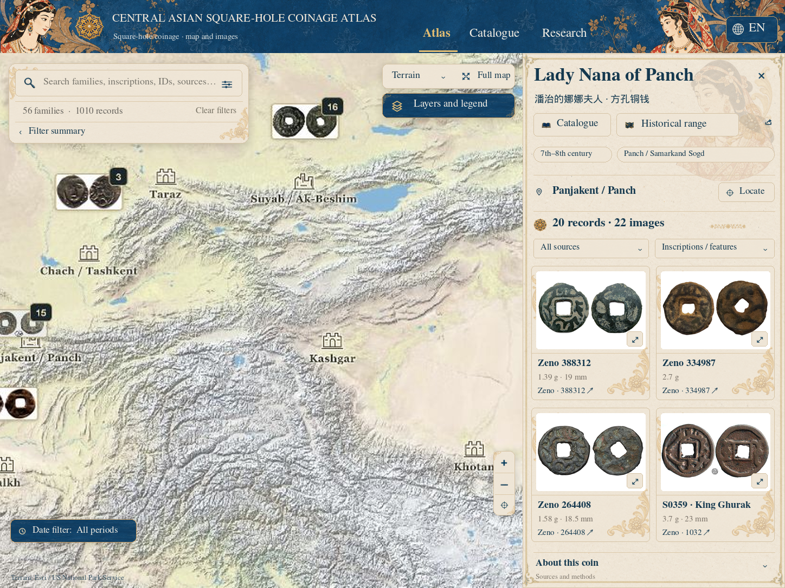
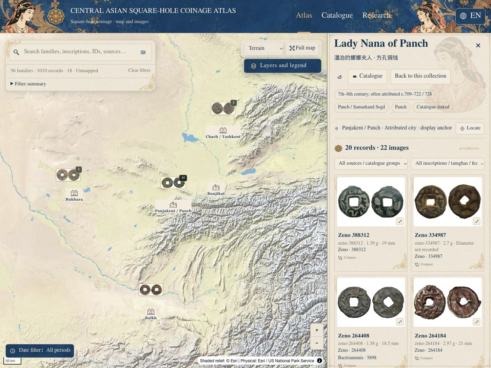
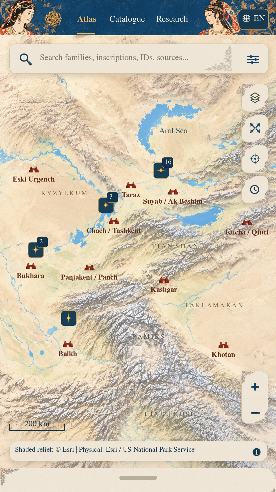
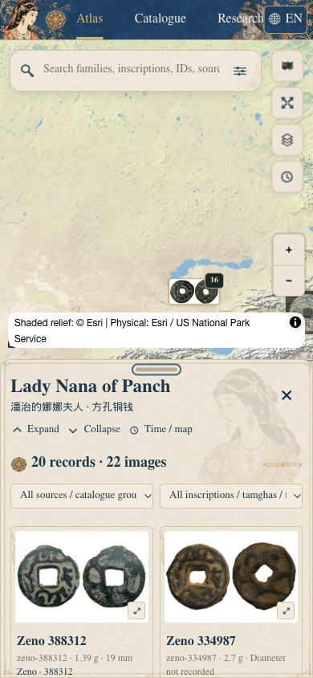
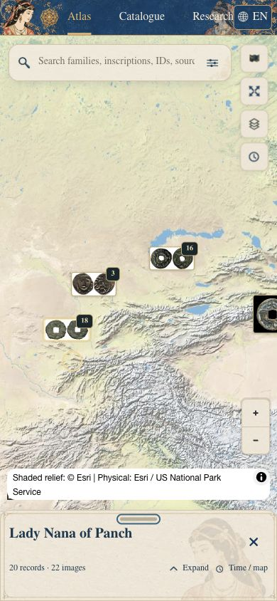
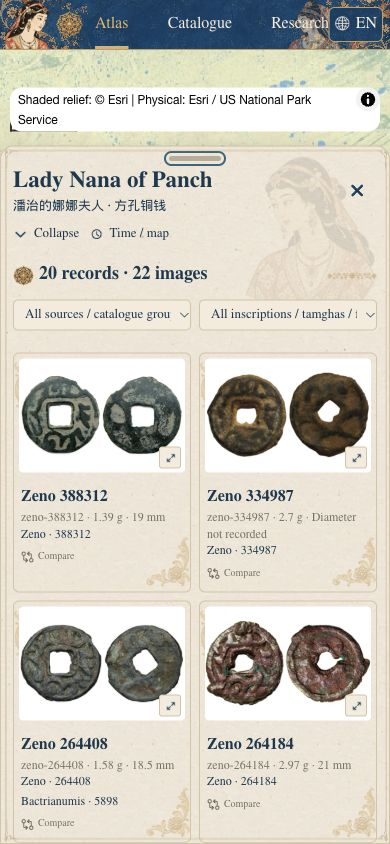

T47.1 · 用户视觉目标与正式页面
左：原参考。右：真实运行截图。交互、地图和钱币数据使用正式版本。
检查记录 · 本机可操作Atlas
桌面Atlas · 1448×1086
R2原参考
真实Atlas
桌面家族详情 · 1448×1086
R2原参考
真实Lady Nana详情
手机Atlas · 按390px宽对照
R1原参考（941×1672设计画布）
实际响应式390×844半屏
正式三档详情
摘要
阅读